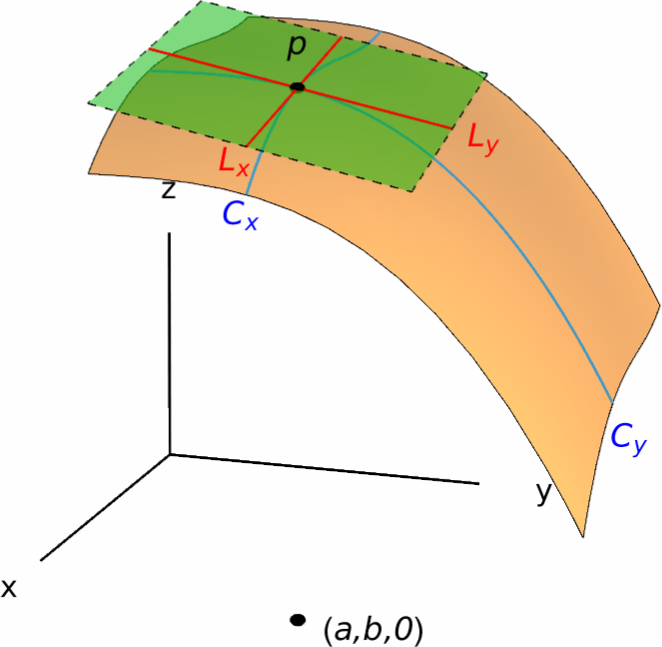
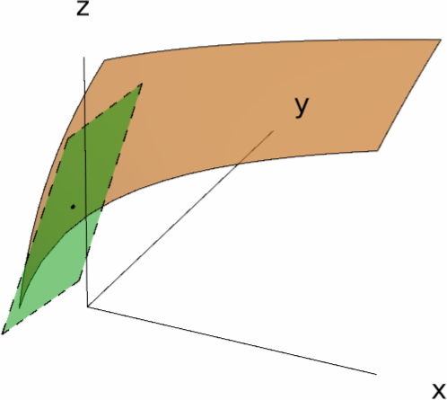

Tangent Planes and Linear Approximations
Let $y=f(x)$ be a function of a single variable and $a$ a real number in its domain. If the derivative $f'(a)$ of $f$ at $a$ exists, then the graph of $f$ near $(a,f(a))$ can be approximated by a straight line $L$, usually known as the tangent line of the curve $y=f(x)$ at $(a,f(a))$. This line was characterized by two conditions:
- $L$ passes through the point $(a,f(a))$, and
- The slope of $L$ is equal to $f'(a)$.
In addition, the tangent line $L$ is given by the equation \[ y-f(a)=f'(a)(x-a). \]
In this section, we will consider an analog of the tangent line for functions of two variables, known as the tangent plane of a function $z=f(x,y)$ at a point $(a,b,f(a,b))$. This plane will give us an approximation of the surface $z=f(x,y)$ near $(a,b,f(a,b))$.
Tangent Planes
If $L_x$ and $L_y$ denote the tangent lines of the curves $C_x$ and $C_y$ at the point $p=(a,b,f(a,b))$, then we define the tangent plane of the surface $z=f(x,y)$ at the point $p$ as the plane that contains the tangent lines $L_x$ and $L_y$.

Let us start by finding an equation for the tangent plane. We know that the equation of a general plane in $\RR^3$ is of the form \[ \alpha x+\beta y+\gamma z=\delta, \] where $\alpha,\,\beta,\,\gamma$ and $\delta$ are real constants. If the above equation represents the tangent plane of the surface $z=f(x,y)$ at $(a,b,f(a,b))$, then this equation must satisfy the following properties:
- $\alpha a+\beta b+\gamma f(a,b) = \delta$, since $p=(a,b,f(a,b))$ belongs to the tangent plane.
- The cross-section of the tangent plane with the plane $y=b$ is the tangent line $T_x$. In other words, the line \[ \begin{cases} y = b,\\ \delta = \alpha x + \beta y +\gamma z=\alpha x+\beta b+\gamma z \end{cases} \] has slope equal to $-\alpha/\gamma=f_x(a,b)$.
- The cross-section of the tangent plane with the plane $x=a$ is the tangent line $T_y$. In other words, the line \[ \begin{cases} x = a,\\ \delta = \alpha x + \beta y +\gamma z=\alpha a+\beta y+\gamma z \end{cases} \] has slope equal to $-\beta/\gamma=f_y(a,b)$.
Using all of the above equations, we arrive at the following formula for the tangent plane of $z=f(x,y)$ at $p$: \[ -\gamma f_x(a,b)x-\gamma f_y(a,b)y+\gamma z = -\gamma f_x(a,b) -\gamma f_y(a,b) b+\gamma f(a,b). \] Dividing by $\gamma$, sending the $z$ terms to the left hand side, and sending all remaining terms to the right hand side, we conclude that the tangent plane of $z=f(x,y)$ is given by \[ z-f(a,b)=f_x(a,b)(x-a)+f_y(a,b)(y-b). \] Summarizing:
Solution.
Let us define the function $g(x,y)=\ln(x+2y)$. Then $g(-1,1)=0$ (which confirms that $(-1,1,0)$ is in the graph of $g$) and the partial derivatives $g_x(-1,1)$, $g_y(-1,1)$ may be computed as follows: \[ \begin{aligned} g_x(x,y)&=\frac{1}{x+2y}\implies g_x(-1,1)=1,\\ g_y(x,y)&=\frac{2}{x+2y}\implies g_y(-1,1)=2. \end{aligned} \] Consequently, the equation of the tangent plane of the surface $z=\ln(x+2y)$ at the point $(-1,1,0)$ is \[ z=(x+1)+2(y-1) \iff x+2y-z=1. \]

Linear Approximations
As we have seen in the above pictures, it seems that the tangent plane of a surface of the form $z=f(x,y)$ near the point $(a,b,f(a,b))$ gives a good approximation of the surface for points that are sufficiently close to $(a,b,f(a,b))$. Moreover, we can regard said tangent plane as the graph of a function. Indeed, if we solve for $z$ in the equation for the tangent plane, we obtain \[ z=f(a,b)+f_x(a,b)(x-a)+f_y(a,b)(y-b). \] Therefore, the (linear!) function \[ L(x,y)=f(a,b)+f_x(a,b)(x-a)+f_y(a,b)(y-b) \] provides a good approximation of $f(x,y)$ near $(a,b)$. The function $L(x,y)$ is called the linearization of $f$ at $(a,b)$, and the approximation \[ f(x,y)\approx f(a,b)+f_x(a,b)(x-a)+f_y(a,b)(y-b) \] is called the linear approximation of $f$ at $(a,b)$.
We can now ask ourselves: when does the linearization of a function $f(x,y)$ at a point $(a,b)$ provide a good approximation of the function $f$ itself near $(a,b)$? As always, we will find inspiration to answer this question by looking at the case of functions of one variable.
Suppose $y=f(x)$ is a function of a single variable and $a$ is in the domain of $f$. In order for the graph of $f$ to have a tangent line at $(a,f(a))$, we need the derivative $f'(a)$ to exist. Now, \[ f'(a)=\lim_{x\to a} \frac{f(x)-f(a)}{x-a}. \] so if we write \[ \varepsilon(x)=\frac{f(x)-f(a)}{x-a}-f'(a) \quad \textsf{for all} \quad x\neq a, \] we see that \[ f(x)=f(a)+f'(a)(x-a)+\varepsilon(x)(x-a), \quad \textsf{where} \quad \varepsilon(x)\to 0\textsf{ as }x\to a. \]
In other words, if $f'(a)$ exists, then for any number $x$ sufficiently close to $a$ the number $f(x)$ is given by its linear approximation $f(a)+f'(a)(x-a)$ together with an error term $\varepsilon(x)(x-a)$ that tends to zero as $x$ approaches $a$.
Motivated by the above, we establish the following definition:
In essence, a function $f(x,y)$ is differentiable at $(a,b)$ if the values of $f(x,y)$ (for $(x,y)$ sufficiently close to $(a,b)$) are governed by its linear approximation $L(x,y)$ at $(a,b)$, together with two error terms that go to zero as $(x,y)$ approaches $(a,b)$.
The following criterion gives us an easy way to determine when a function is differentiable at a point.
Solution.
Let us compute the partial derivatives of $h$. These are \[ \frac{\partial h}{\partial x}=e^x\cos(x^2y)-2xe^x\sin(x^2y), \qquad \frac{\partial h}{\partial y}=-x^2e^x\sin(x^2y). \] Both of these functions are continuous, so $h$ is differentiable at every point, including $(1,\pi)$.
To compute the linearization of $h$ at $(1,\pi)$, we first evaluate the partial derivatives of $h$ at said point: \[ \frac{\partial h}{\partial x}(1,\pi)=-e, \qquad \frac{\partial h}{\partial y}(1,\pi)=0. \] Thus, the linearization of $h$ at $(1,\pi)$ is \[ L(x,y)=h(1,\pi)+\frac{\partial h}{\partial x}(1,\pi)(x-1) +\frac{\partial h}{\partial y}(y-\pi) =-e-e(x-1)=-ex, \] and the corresponding linear approximation is \[ e^x\cos(x^2y)\approx -ex. \] Consequently, \[ h(1.1,3)\approx -1.1\cdot e\approx -2.99011. \] Compare this with the exact value: \[ h(1.1,3)=e^{1.1}\cos(3.63)\approx -2.65292. \]
Differentials
Suppose $z=f(x,y)$ is a differentiable function of two variables and $(a,b)$ is in $\dom(f)$. We will introduce a tool (known as the differential of $z$) that will allow us to estimate the change in $z$ when we move from $(a,b)$ to a nearby point $(x,y)$ in the domain of $f$.
Let us write $\Delta x=x-a$, $\Delta y=y-b$ and $\Delta z=f(x,y)-f(a,b)$. Then the differentiability of $f$ at $(a,b)$ says that \[ \Delta z = f_x(a,b)\Delta x + f_y(a,b)\Delta y +\varepsilon_1(x,y)\Delta x +\varepsilon_2(x,y)\Delta y, \] where the functions $\varepsilon_1$ and $\varepsilon_2$ approach zero as $(x,y)\to (a,b)$.
Now take two small changes in $x$ and $y$ (say, $dx$ and $dy$ respectively), and let us compare $f(a+dx,b+dy)$ with $f(a,b)$. The two last terms in the above equation may be ignored (as they are close to zero), so that \[ \Delta z\approx f_x(a,b)dx+f_y(a,b)dy. \]
Solution.
The volume of a cylinder is given by the formula $V=\pi r^2h$, where $r$ is the radius of its base and $h$ is its height. Consequently, the differential of $V$ is \[ dV=\frac{\partial V}{\partial r}dr +\frac{\partial V}{\partial h}dh = 2\pi rh\,dr+\pi r^2\,dh. \] Since the error in each measurement is at most $\varepsilon$ inches, we can estimate the maximum possible error $\Delta V\approx dV$ in $V$ by taking $dr=\varepsilon$ and $dh=\varepsilon$, together with $r=3$ and $h=15$. This yields \[ dV=2\pi\cdot 3\cdot 15\varepsilon+\pi\cdot 3^2\cdot\varepsilon =99\pi\varepsilon. \] Thus, the maximum possible error in the computed volume is aprroximately equal to $99\pi\varepsilon$ inches.
Linear Approximations of Functions of Several Variables
The notions of linear approximation and differential of a function can be extended to functions of any amount of variables.
Moreover, the differential of $f$ (or of $u$) at $(a_1,\dots,a_n)$ is the function of the variables $dx_1,\,\dots,\,dx_n$ given by \[ du=f_{x_1}(a_1,\dots,a_n)dx_1 + \cdots + f_{x_n}(a_1,\dots,a_n)dx_n. \]